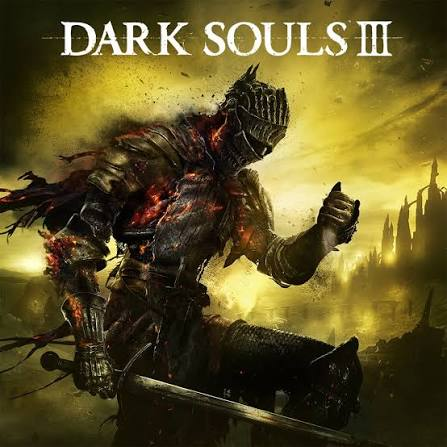
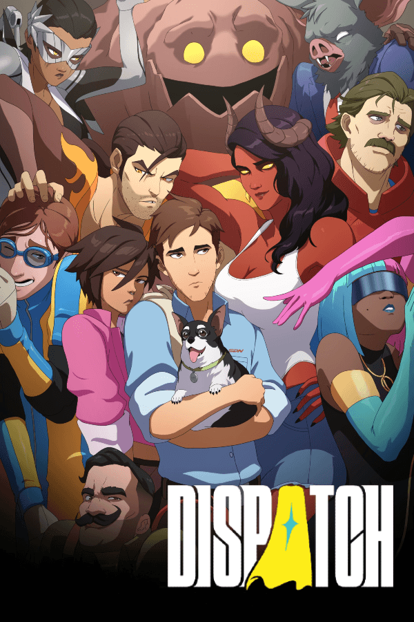

Gaming is another one of my favorite pass times when I'm in need of a break from life and work. There are many different games that I like to play, and many different genres that I have played/enjoyed through the years. My favorite games that I have played are the soulsborne games, and even though they are some of the hardest games that I have ever played, being able to beat them gives a great sense of accomplishment after being able to finally beat that boss you fought for multiple days. I also enjoy different story/action games, finally being able to get a PC I was able to play games like the spiderman series as well as God of War which was a blast to experience. I also like actual story games like the walking dead telltale, dispatch, etc.

